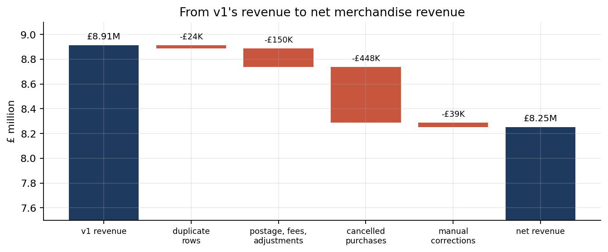

Projects / Retail revenue and customer value
Complete · numbers checked 2026-10-08A UK wholesaler's revenue was £8.25M, not £8.91M: cancellations had been counted as sales
A year of invoices (541,909 lines) reconciles to £8.25M of net merchandise revenue from 4,324 customers. A first pass reported £8.91M, 8% too high, because cancelled purchases, postage and fees, duplicate rows and manual corrections had not been taken out. The bridge between the two figures closes to the penny.
- Invoice lines
- 541,909
- Net revenue
- £8.25M
- First-pass overstatement
- £661K
- Customers
- 4,324
01The question
Which customers deserve the retention budget? That needs a revenue figure you can trust first, then a segmentation, then a test of whether the segments predict anything.
02The data
The UCI Online Retail dataset: a UK online wholesaler's invoices from 1 December 2010 to 9 December 2011 (Chen, Sain and Guo 2012, CC BY 4.0). Many customers are themselves retailers.
03The method
Revenue is cleaned with a ledger that accounts for every pound: cancellations are netted against the purchase they reverse (matched on customer, product and unit price), postage, fees and adjustments are removed from merchandise revenue, and exact duplicate rows are dropped.
Customers are then scored by recency, frequency and monetary value (RFM) on data up to 9 September 2011 and checked against the next 13 weeks, which the scoring never saw. 89.5% of Champions bought again, against 58.4% of "At risk" customers. The labels carry signal, but "At risk" overstates the risk: in a wholesale business a quiet spell is often just the gap between orders.
For a retention campaign, four ways of ranking customers were compared. The top 20% by plain past spend held 67.7% of next-quarter spend; a probabilistic value model (BG/NBD with Gamma-Gamma, written from its likelihoods) held 69.3%, a small gain for a much more complex method.

04What this does not show
- One year of data, so no seasonality can be learned; the analysis is of revenue, not margin.
- 135,080 lines without a customer ID (£1.45M) sit outside the customer view.
- The December 2010 cohort includes established customers, so the cohort charts start optimistic.
- The customer-value model is a likelihood fit to one wholesaler; it says nothing about other kinds of retailer.
05Figures this page replaces
The first version of this analysis reported £8.91M of revenue from 4,338 customers. It dropped cancelled invoices but not the purchases they cancelled. Those figures are retired. In the corrected data, Champions hold 53.6% of net revenue.
06Reproduce it
python -m venv .venv && .venv/bin/pip install -r requirements.txt cd notebooks && ../.venv/bin/jupyter nbconvert --to notebook --execute --inplace customer_value.ipynb cd .. && .venv/bin/python build_dashboard.py
Source and code: repository. Data: UCI Online Retail (CC BY 4.0).